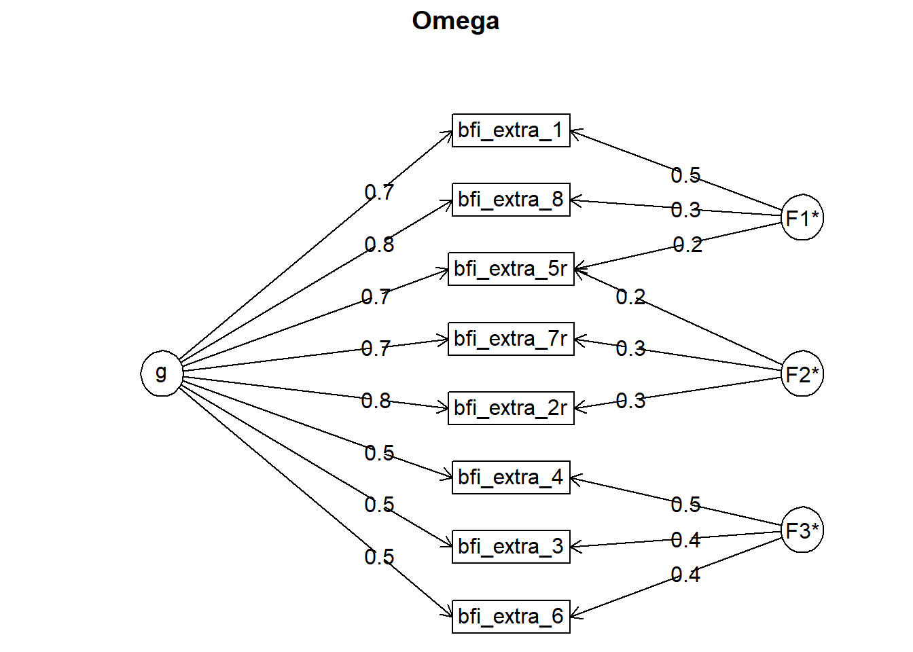
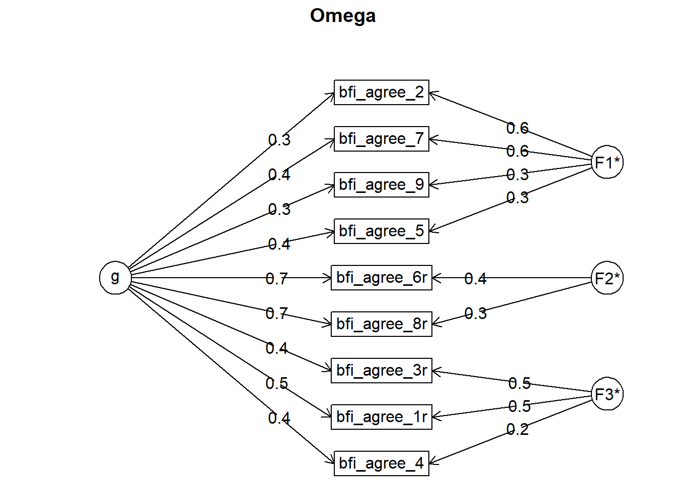
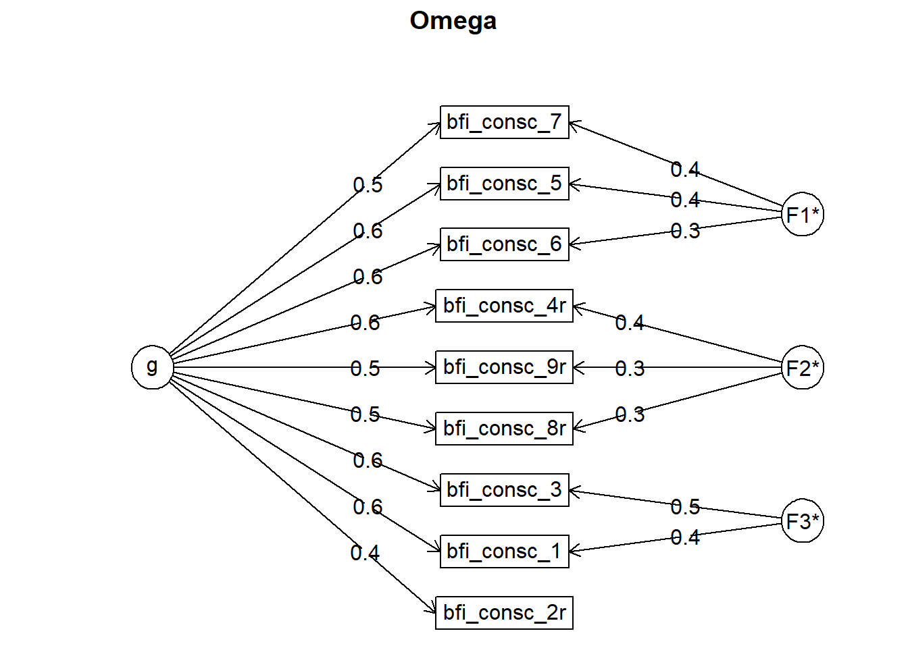
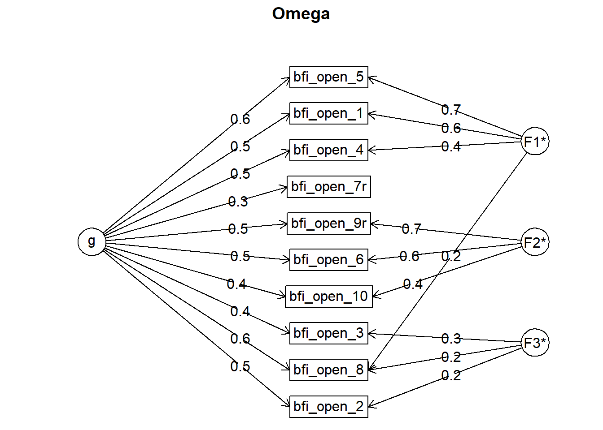
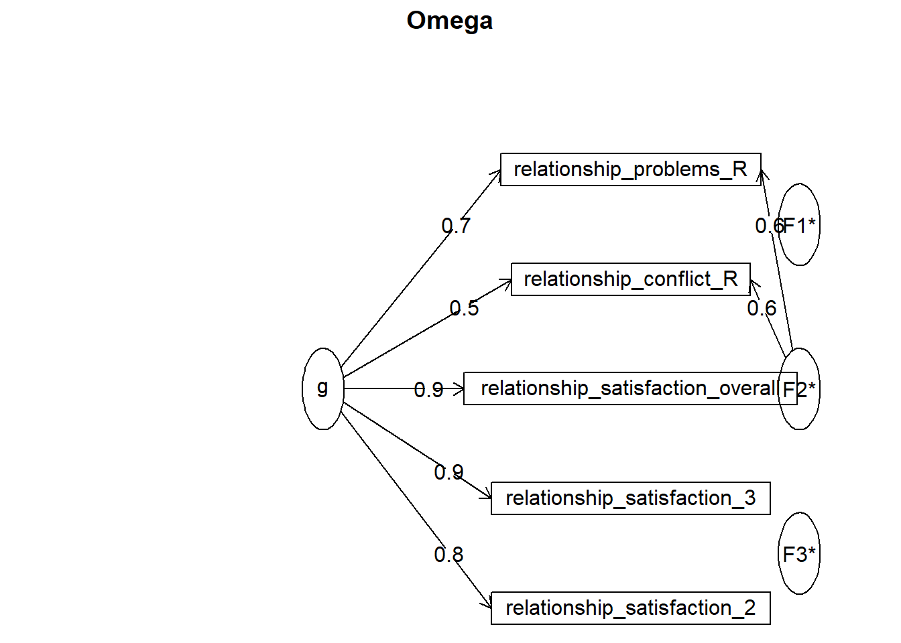

Descriptives
Data and Functions
Means, Standard Deviations and Ranges
mean_sd_range1 = data %>%
select(session,
age, education_years,
bfi_extra, bfi_neuro, bfi_agree, bfi_consc, bfi_open,
religiosity,
diary_libido_mean, diary_masturbation_sum, diary_sex_active_sex_sum) %>%
pivot_longer(-session, names_to = "Variable", values_to = "Value") %>%
group_by(Variable) %>%
summarise(n = sum(!is.na(Value)),
mean = round(mean(Value, na.rm = T), 2),
sd = round(sd(Value, na.rm = T), 2),
min = round(min(Value, na.rm = T), 2),
max = round(max(Value, na.rm = T), 2))
mean_sd_range2 = data %>%
select(session,
attractiveness_partner,
relationship_satisfaction,
satisfaction_sexual_intercourse,
) %>%
pivot_longer(-session, names_to = "Variable", values_to = "Value") %>%
group_by(Variable) %>%
summarise(n = sum(!is.na(Value)),
mean = round(mean(Value, na.rm = T), 2),
sd = round(sd(Value, na.rm = T), 2),
min = round(min(Value, na.rm = T), 2),
max = round(max(Value, na.rm = T), 2))
mean_sd_range = data.frame(x = c(1:16)) %>%
cbind(Variable = c("age", "education_years", "net_income", "bfi_extra", "bfi_neuro", "bfi_agree", "bfi_consc", "bfi_open", "religiosity", "relationship_duration", "attractiveness_partner", "relationship_satisfaction", "satisfaction_sexual_intercourse","diary_libido_mean", "diary_sex_active_sex_sum", "diary_masturbation_sum")) %>%
select(-x)
mean_sd_range = left_join(mean_sd_range,
rbind(mean_sd_range1, mean_sd_range2),
by = "Variable")
kable(mean_sd_range)| Variable | n | mean | sd | min | max |
|---|---|---|---|---|---|
| age | 1179 | 25.03 | 5.09 | 18.00 | 49.00 |
| education_years | 1179 | 15.07 | 4.73 | 0.00 | 26.00 |
| net_income | NA | NA | NA | NA | NA |
| bfi_extra | 1179 | 3.46 | 0.78 | 1.12 | 5.00 |
| bfi_neuro | 1179 | 3.00 | 0.78 | 1.00 | 5.00 |
| bfi_agree | 1179 | 3.68 | 0.62 | 1.44 | 5.00 |
| bfi_consc | 1179 | 3.53 | 0.66 | 1.56 | 5.00 |
| bfi_open | 1179 | 3.78 | 0.61 | 1.50 | 5.00 |
| religiosity | 1179 | 2.20 | 1.34 | 1.00 | 6.00 |
| relationship_duration | NA | NA | NA | NA | NA |
| attractiveness_partner | 774 | 4.25 | 0.74 | 1.00 | 5.00 |
| relationship_satisfaction | 774 | 3.39 | 0.43 | 1.40 | 4.60 |
| satisfaction_sexual_intercourse | 774 | 4.00 | 1.05 | 1.00 | 5.00 |
| diary_libido_mean | 968 | 1.19 | 0.59 | 0.00 | 3.03 |
| diary_sex_active_sex_sum | 897 | 7.25 | 7.18 | 0.00 | 42.00 |
| diary_masturbation_sum | 897 | 6.95 | 7.21 | 0.00 | 50.00 |
Reliability
Big Five Personality
cronbachs_alpha_bfi_extra = data %>%
select(starts_with("bfi_extra_")) %>%
psych::alpha()
cronbachs_alpha_bfi_extra##
## Reliability analysis
## Call: psych::alpha(x = .)
##
## raw_alpha std.alpha G6(smc) average_r S/N ase mean sd median_r
## 0.88 0.87 0.87 0.46 7 0.0054 3.5 0.78 0.43
##
## lower alpha upper 95% confidence boundaries
## 0.87 0.88 0.89
##
## Reliability if an item is dropped:
## raw_alpha std.alpha G6(smc) average_r S/N alpha se var.r med.r
## bfi_extra_1 0.86 0.85 0.85 0.45 5.8 0.0063 0.013 0.43
## bfi_extra_3 0.87 0.87 0.87 0.49 6.8 0.0056 0.015 0.45
## bfi_extra_2r 0.85 0.85 0.84 0.44 5.6 0.0066 0.012 0.42
## bfi_extra_4 0.87 0.87 0.86 0.48 6.4 0.0057 0.018 0.44
## bfi_extra_5r 0.85 0.85 0.85 0.45 5.7 0.0065 0.012 0.43
## bfi_extra_6 0.87 0.87 0.87 0.50 6.9 0.0054 0.014 0.45
## bfi_extra_7r 0.86 0.86 0.86 0.47 6.1 0.0061 0.015 0.43
## bfi_extra_8 0.85 0.85 0.84 0.44 5.5 0.0067 0.011 0.41
##
## Item statistics
## n raw.r std.r r.cor r.drop mean sd
## bfi_extra_1 1179 0.77 0.77 0.74 0.69 3.8 1.03
## bfi_extra_3 1179 0.61 0.63 0.54 0.50 3.4 0.92
## bfi_extra_2r 1179 0.81 0.80 0.78 0.74 3.3 1.14
## bfi_extra_4 1179 0.67 0.68 0.61 0.57 3.7 1.00
## bfi_extra_5r 1179 0.80 0.79 0.77 0.72 3.8 1.12
## bfi_extra_6 1179 0.60 0.61 0.52 0.48 3.4 1.01
## bfi_extra_7r 1179 0.74 0.72 0.67 0.63 2.7 1.23
## bfi_extra_8 1179 0.83 0.82 0.81 0.76 3.5 1.09
##
## Non missing response frequency for each item
## 1 2 3 4 5 miss
## bfi_extra_1 0.02 0.09 0.22 0.37 0.29 0
## bfi_extra_3 0.02 0.11 0.38 0.37 0.12 0
## bfi_extra_2r 0.06 0.21 0.25 0.32 0.16 0
## bfi_extra_4 0.02 0.10 0.23 0.41 0.23 0
## bfi_extra_5r 0.04 0.10 0.21 0.32 0.33 0
## bfi_extra_6 0.03 0.17 0.32 0.36 0.12 0
## bfi_extra_7r 0.18 0.33 0.21 0.20 0.09 0
## bfi_extra_8 0.04 0.13 0.27 0.36 0.20 0cronbachs_alpha_bfi_neuro = data %>%
select(starts_with("bfi_neuro_")) %>%
psych::alpha()
cronbachs_alpha_bfi_neuro##
## Reliability analysis
## Call: psych::alpha(x = .)
##
## raw_alpha std.alpha G6(smc) average_r S/N ase mean sd median_r
## 0.85 0.85 0.85 0.42 5.7 0.0067 3 0.78 0.4
##
## lower alpha upper 95% confidence boundaries
## 0.84 0.85 0.86
##
## Reliability if an item is dropped:
## raw_alpha std.alpha G6(smc) average_r S/N alpha se var.r med.r
## bfi_neuro_2r 0.83 0.83 0.82 0.40 4.8 0.0078 0.0062 0.40
## bfi_neuro_1 0.84 0.84 0.84 0.43 5.3 0.0072 0.0081 0.40
## bfi_neuro_3 0.82 0.83 0.82 0.40 4.7 0.0079 0.0088 0.39
## bfi_neuro_4 0.84 0.84 0.83 0.43 5.2 0.0073 0.0089 0.41
## bfi_neuro_5r 0.83 0.83 0.82 0.41 4.8 0.0077 0.0059 0.40
## bfi_neuro_8 0.84 0.84 0.83 0.42 5.2 0.0073 0.0083 0.41
## bfi_neuro_6r 0.83 0.83 0.82 0.41 4.8 0.0077 0.0047 0.40
## bfi_neuro_7 0.83 0.84 0.83 0.42 5.1 0.0074 0.0094 0.39
##
## Item statistics
## n raw.r std.r r.cor r.drop mean sd
## bfi_neuro_2r 1179 0.74 0.74 0.71 0.64 3.2 1.1
## bfi_neuro_1 1179 0.64 0.64 0.56 0.52 2.3 1.1
## bfi_neuro_3 1179 0.75 0.75 0.70 0.65 2.9 1.1
## bfi_neuro_4 1179 0.66 0.66 0.58 0.54 3.7 1.1
## bfi_neuro_5r 1179 0.73 0.73 0.69 0.63 2.9 1.1
## bfi_neuro_8 1179 0.67 0.67 0.60 0.55 3.2 1.2
## bfi_neuro_6r 1179 0.72 0.73 0.69 0.62 2.9 1.1
## bfi_neuro_7 1179 0.69 0.68 0.62 0.57 2.9 1.1
##
## Non missing response frequency for each item
## 1 2 3 4 5 miss
## bfi_neuro_2r 0.06 0.22 0.28 0.31 0.13 0
## bfi_neuro_1 0.30 0.33 0.22 0.11 0.04 0
## bfi_neuro_3 0.09 0.32 0.28 0.25 0.06 0
## bfi_neuro_4 0.03 0.14 0.20 0.35 0.28 0
## bfi_neuro_5r 0.09 0.29 0.31 0.23 0.07 0
## bfi_neuro_8 0.09 0.24 0.24 0.29 0.14 0
## bfi_neuro_6r 0.09 0.29 0.31 0.24 0.07 0
## bfi_neuro_7 0.10 0.30 0.27 0.24 0.10 0cronbachs_alpha_bfi_agree = data %>%
select(starts_with("bfi_agree_")) %>%
psych::alpha()
cronbachs_alpha_bfi_agree##
## Reliability analysis
## Call: psych::alpha(x = .)
##
## raw_alpha std.alpha G6(smc) average_r S/N ase mean sd median_r
## 0.76 0.76 0.77 0.26 3.2 0.01 3.7 0.62 0.26
##
## lower alpha upper 95% confidence boundaries
## 0.74 0.76 0.78
##
## Reliability if an item is dropped:
## raw_alpha std.alpha G6(smc) average_r S/N alpha se var.r med.r
## bfi_agree_2 0.75 0.74 0.75 0.27 2.9 0.011 0.0112 0.26
## bfi_agree_3r 0.75 0.75 0.75 0.27 3.0 0.011 0.0110 0.27
## bfi_agree_1r 0.74 0.74 0.74 0.26 2.8 0.011 0.0121 0.26
## bfi_agree_4 0.75 0.75 0.75 0.27 2.9 0.011 0.0135 0.26
## bfi_agree_5 0.75 0.74 0.75 0.27 2.9 0.011 0.0134 0.25
## bfi_agree_6r 0.72 0.73 0.72 0.25 2.7 0.012 0.0086 0.26
## bfi_agree_7 0.74 0.74 0.74 0.26 2.8 0.011 0.0120 0.25
## bfi_agree_8r 0.71 0.71 0.70 0.24 2.5 0.013 0.0067 0.24
## bfi_agree_9 0.75 0.75 0.76 0.27 3.0 0.010 0.0138 0.27
##
## Item statistics
## n raw.r std.r r.cor r.drop mean sd
## bfi_agree_2 1179 0.51 0.56 0.48 0.39 3.9 0.85
## bfi_agree_3r 1179 0.52 0.53 0.43 0.38 4.3 0.91
## bfi_agree_1r 1179 0.61 0.60 0.54 0.47 3.1 1.08
## bfi_agree_4 1179 0.56 0.54 0.44 0.39 3.3 1.17
## bfi_agree_5 1179 0.54 0.55 0.46 0.40 3.9 0.99
## bfi_agree_6r 1179 0.69 0.65 0.62 0.54 3.0 1.29
## bfi_agree_7 1179 0.54 0.59 0.52 0.43 4.2 0.78
## bfi_agree_8r 1179 0.76 0.72 0.72 0.63 3.3 1.27
## bfi_agree_9 1179 0.51 0.53 0.42 0.36 4.1 0.97
##
## Non missing response frequency for each item
## 1 2 3 4 5 miss
## bfi_agree_2 0.01 0.04 0.21 0.49 0.24 0
## bfi_agree_3r 0.01 0.05 0.11 0.31 0.52 0
## bfi_agree_1r 0.06 0.25 0.30 0.29 0.10 0
## bfi_agree_4 0.08 0.17 0.26 0.33 0.16 0
## bfi_agree_5 0.02 0.09 0.17 0.45 0.28 0
## bfi_agree_6r 0.15 0.24 0.22 0.24 0.14 0
## bfi_agree_7 0.00 0.02 0.12 0.43 0.43 0
## bfi_agree_8r 0.10 0.20 0.22 0.28 0.20 0
## bfi_agree_9 0.02 0.06 0.15 0.36 0.41 0cronbachs_alpha_bfi_consc = data %>%
select(starts_with("bfi_consc_")) %>%
psych::alpha()
cronbachs_alpha_bfi_consc##
## Reliability analysis
## Call: psych::alpha(x = .)
##
## raw_alpha std.alpha G6(smc) average_r S/N ase mean sd median_r
## 0.81 0.82 0.81 0.34 4.6 0.0081 3.5 0.66 0.34
##
## lower alpha upper 95% confidence boundaries
## 0.8 0.81 0.83
##
## Reliability if an item is dropped:
## raw_alpha std.alpha G6(smc) average_r S/N alpha se var.r med.r
## bfi_consc_2r 0.81 0.82 0.81 0.36 4.5 0.0083 0.0036 0.35
## bfi_consc_3 0.79 0.80 0.79 0.33 4.0 0.0091 0.0055 0.35
## bfi_consc_1 0.79 0.79 0.78 0.32 3.8 0.0093 0.0050 0.33
## bfi_consc_9r 0.80 0.81 0.79 0.34 4.2 0.0088 0.0057 0.35
## bfi_consc_4r 0.79 0.80 0.79 0.33 4.0 0.0094 0.0064 0.33
## bfi_consc_5 0.79 0.80 0.79 0.33 4.0 0.0091 0.0054 0.33
## bfi_consc_6 0.79 0.80 0.79 0.33 4.0 0.0092 0.0055 0.33
## bfi_consc_7 0.79 0.80 0.79 0.34 4.1 0.0090 0.0050 0.34
## bfi_consc_8r 0.79 0.80 0.80 0.34 4.1 0.0090 0.0065 0.34
##
## Item statistics
## n raw.r std.r r.cor r.drop mean sd
## bfi_consc_2r 1179 0.53 0.52 0.42 0.38 3.5 1.07
## bfi_consc_3 1179 0.64 0.67 0.62 0.55 4.2 0.81
## bfi_consc_1 1179 0.68 0.70 0.66 0.59 4.0 0.83
## bfi_consc_9r 1179 0.65 0.62 0.55 0.49 2.9 1.32
## bfi_consc_4r 1179 0.69 0.67 0.62 0.57 2.9 1.17
## bfi_consc_5 1179 0.65 0.66 0.60 0.53 3.6 0.99
## bfi_consc_6 1179 0.65 0.67 0.61 0.54 3.7 0.97
## bfi_consc_7 1179 0.62 0.63 0.57 0.50 3.8 0.94
## bfi_consc_8r 1179 0.65 0.63 0.56 0.51 3.1 1.14
##
## Non missing response frequency for each item
## 1 2 3 4 5 miss
## bfi_consc_2r 0.02 0.17 0.23 0.37 0.20 0
## bfi_consc_3 0.00 0.03 0.12 0.43 0.41 0
## bfi_consc_1 0.00 0.05 0.17 0.48 0.30 0
## bfi_consc_9r 0.17 0.25 0.22 0.21 0.15 0
## bfi_consc_4r 0.11 0.28 0.27 0.23 0.10 0
## bfi_consc_5 0.02 0.13 0.28 0.39 0.18 0
## bfi_consc_6 0.02 0.10 0.26 0.42 0.20 0
## bfi_consc_7 0.02 0.07 0.25 0.41 0.25 0
## bfi_consc_8r 0.09 0.23 0.27 0.30 0.10 0cronbachs_alpha_bfi_open = data %>%
select(starts_with("bfi_open_")) %>%
psych::alpha()
cronbachs_alpha_bfi_open##
## Reliability analysis
## Call: psych::alpha(x = .)
##
## raw_alpha std.alpha G6(smc) average_r S/N ase mean sd median_r
## 0.81 0.81 0.83 0.3 4.3 0.0082 3.8 0.61 0.26
##
## lower alpha upper 95% confidence boundaries
## 0.79 0.81 0.83
##
## Reliability if an item is dropped:
## raw_alpha std.alpha G6(smc) average_r S/N alpha se var.r med.r
## bfi_open_1 0.78 0.79 0.79 0.29 3.7 0.0094 0.016 0.27
## bfi_open_2 0.80 0.80 0.82 0.30 3.9 0.0089 0.022 0.25
## bfi_open_3 0.80 0.81 0.82 0.32 4.2 0.0086 0.020 0.29
## bfi_open_4 0.79 0.79 0.81 0.29 3.7 0.0093 0.018 0.26
## bfi_open_5 0.78 0.78 0.79 0.28 3.5 0.0096 0.014 0.26
## bfi_open_6 0.79 0.79 0.80 0.29 3.7 0.0093 0.016 0.26
## bfi_open_7r 0.82 0.82 0.83 0.33 4.5 0.0078 0.015 0.30
## bfi_open_8 0.78 0.79 0.80 0.29 3.7 0.0093 0.020 0.26
## bfi_open_9r 0.78 0.79 0.79 0.29 3.7 0.0094 0.016 0.26
## bfi_open_10 0.79 0.80 0.81 0.30 3.9 0.0089 0.019 0.28
##
## Item statistics
## n raw.r std.r r.cor r.drop mean sd
## bfi_open_1 1179 0.67 0.67 0.65 0.56 3.4 1.02
## bfi_open_2 1179 0.55 0.58 0.49 0.45 4.3 0.81
## bfi_open_3 1179 0.48 0.51 0.41 0.36 4.3 0.85
## bfi_open_4 1179 0.65 0.65 0.60 0.54 4.0 1.02
## bfi_open_5 1179 0.70 0.71 0.70 0.61 3.5 1.01
## bfi_open_6 1179 0.65 0.64 0.61 0.54 4.0 1.05
## bfi_open_7r 1179 0.41 0.40 0.28 0.24 3.4 1.08
## bfi_open_8 1179 0.66 0.67 0.62 0.56 4.0 0.94
## bfi_open_9r 1179 0.68 0.67 0.64 0.57 4.0 1.11
## bfi_open_10 1179 0.61 0.59 0.53 0.47 3.1 1.13
##
## Non missing response frequency for each item
## 1 2 3 4 5 miss
## bfi_open_1 0.04 0.14 0.30 0.38 0.13 0
## bfi_open_2 0.00 0.03 0.13 0.40 0.45 0
## bfi_open_3 0.00 0.04 0.12 0.33 0.50 0
## bfi_open_4 0.02 0.08 0.17 0.36 0.38 0
## bfi_open_5 0.03 0.13 0.31 0.38 0.15 0
## bfi_open_6 0.03 0.08 0.17 0.34 0.38 0
## bfi_open_7r 0.05 0.17 0.30 0.34 0.15 0
## bfi_open_8 0.01 0.07 0.19 0.42 0.31 0
## bfi_open_9r 0.03 0.10 0.14 0.29 0.44 0
## bfi_open_10 0.09 0.23 0.30 0.28 0.10 0
## Omega
## Call: omegah(m = m, nfactors = nfactors, fm = fm, key = key, flip = flip,
## digits = digits, title = title, sl = sl, labels = labels,
## plot = plot, n.obs = n.obs, rotate = rotate, Phi = Phi, option = option,
## covar = covar)
## Alpha: 0.87
## G.6: 0.87
## Omega Hierarchical: 0.77
## Omega H asymptotic: 0.85
## Omega Total 0.9
##
## Schmid Leiman Factor loadings greater than 0.2
## g F1* F2* F3* h2 u2 p2
## bfi_extra_1 0.70 0.46 0.71 0.29 0.69
## bfi_extra_3 0.47 0.41 0.39 0.61 0.57
## bfi_extra_2r 0.76 0.29 0.68 0.32 0.86
## bfi_extra_4 0.54 0.46 0.51 0.49 0.57
## bfi_extra_5r 0.74 0.23 0.23 0.65 0.35 0.84
## bfi_extra_6 0.47 0.39 0.39 0.61 0.56
## bfi_extra_7r 0.67 0.34 0.57 0.43 0.79
## bfi_extra_8 0.76 0.30 0.70 0.30 0.83
##
## With eigenvalues of:
## g F1* F2* F3*
## 3.37 0.39 0.28 0.55
##
## general/max 6.12 max/min = 1.98
## mean percent general = 0.71 with sd = 0.13 and cv of 0.19
## Explained Common Variance of the general factor = 0.73
##
## The degrees of freedom are 7 and the fit is 0.03
## The number of observations was 1179 with Chi Square = 40.29 with prob < 0.0000011
## The root mean square of the residuals is 0.01
## The df corrected root mean square of the residuals is 0.03
## RMSEA index = 0.064 and the 10 % confidence intervals are 0.045 0.083
## BIC = -9.22
##
## Compare this with the adequacy of just a general factor and no group factors
## The degrees of freedom for just the general factor are 20 and the fit is 0.33
## The number of observations was 1179 with Chi Square = 389.9 with prob < 2.6e-70
## The root mean square of the residuals is 0.08
## The df corrected root mean square of the residuals is 0.1
##
## RMSEA index = 0.125 and the 10 % confidence intervals are 0.115 0.136
## BIC = 248.4
##
## Measures of factor score adequacy
## g F1* F2* F3*
## Correlation of scores with factors 0.89 0.60 0.46 0.64
## Multiple R square of scores with factors 0.79 0.36 0.22 0.41
## Minimum correlation of factor score estimates 0.58 -0.28 -0.57 -0.19
##
## Total, General and Subset omega for each subset
## g F1* F2* F3*
## Omega total for total scores and subscales 0.90 0.84 0.77 0.69
## Omega general for total scores and subscales 0.77 0.70 0.64 0.40
## Omega group for total scores and subscales 0.09 0.14 0.13 0.29
## Omega
## Call: omegah(m = m, nfactors = nfactors, fm = fm, key = key, flip = flip,
## digits = digits, title = title, sl = sl, labels = labels,
## plot = plot, n.obs = n.obs, rotate = rotate, Phi = Phi, option = option,
## covar = covar)
## Alpha: 0.85
## G.6: 0.85
## Omega Hierarchical: 0.71
## Omega H asymptotic: 0.8
## Omega Total 0.89
##
## Schmid Leiman Factor loadings greater than 0.2
## g F1* F2* F3* h2 u2 p2
## bfi_neuro_2r 0.61 0.44 0.57 0.43 0.65
## bfi_neuro_1 0.54 0.30 0.41 0.59 0.72
## bfi_neuro_3 0.62 0.22 0.49 0.51 0.79
## bfi_neuro_4 0.57 0.35 0.45 0.55 0.72
## bfi_neuro_5r 0.60 0.46 0.57 0.43 0.63
## bfi_neuro_8 0.60 0.73 0.89 0.11 0.41
## bfi_neuro_6r 0.59 0.57 0.68 0.32 0.52
## bfi_neuro_7 0.59 0.33 0.48 0.52 0.74
##
## With eigenvalues of:
## g F1* F2* F3*
## 2.80 0.78 0.36 0.60
##
## general/max 3.6 max/min = 2.16
## mean percent general = 0.65 with sd = 0.13 and cv of 0.2
## Explained Common Variance of the general factor = 0.62
##
## The degrees of freedom are 7 and the fit is 0.02
## The number of observations was 1179 with Chi Square = 18.32 with prob < 0.011
## The root mean square of the residuals is 0.01
## The df corrected root mean square of the residuals is 0.02
## RMSEA index = 0.037 and the 10 % confidence intervals are 0.017 0.058
## BIC = -31.18
##
## Compare this with the adequacy of just a general factor and no group factors
## The degrees of freedom for just the general factor are 20 and the fit is 0.45
## The number of observations was 1179 with Chi Square = 526.3 with prob < 8.9e-99
## The root mean square of the residuals is 0.1
## The df corrected root mean square of the residuals is 0.12
##
## RMSEA index = 0.147 and the 10 % confidence intervals are 0.136 0.158
## BIC = 384.9
##
## Measures of factor score adequacy
## g F1* F2* F3*
## Correlation of scores with factors 0.85 0.70 0.52 0.83
## Multiple R square of scores with factors 0.72 0.49 0.27 0.69
## Minimum correlation of factor score estimates 0.44 -0.03 -0.46 0.39
##
## Total, General and Subset omega for each subset
## g F1* F2* F3*
## Omega total for total scores and subscales 0.89 0.82 0.70 0.78
## Omega general for total scores and subscales 0.71 0.49 0.52 0.49
## Omega group for total scores and subscales 0.13 0.33 0.18 0.29
## Omega
## Call: omegah(m = m, nfactors = nfactors, fm = fm, key = key, flip = flip,
## digits = digits, title = title, sl = sl, labels = labels,
## plot = plot, n.obs = n.obs, rotate = rotate, Phi = Phi, option = option,
## covar = covar)
## Alpha: 0.76
## G.6: 0.77
## Omega Hierarchical: 0.57
## Omega H asymptotic: 0.7
## Omega Total 0.81
##
## Schmid Leiman Factor loadings greater than 0.2
## g F1* F2* F3* h2 u2 p2
## bfi_agree_2 0.34 0.60 0.48 0.52 0.24
## bfi_agree_3r 0.37 0.51 0.40 0.60 0.35
## bfi_agree_1r 0.45 0.46 0.42 0.58 0.49
## bfi_agree_4 0.35 0.25 0.20 0.80 0.62
## bfi_agree_5 0.36 0.28 0.21 0.79 0.60
## bfi_agree_6r 0.70 0.42 0.68 0.32 0.73
## bfi_agree_7 0.37 0.56 0.46 0.54 0.30
## bfi_agree_8r 0.74 0.35 0.68 0.32 0.79
## bfi_agree_9 0.29 0.31 0.21 0.79 0.40
##
## With eigenvalues of:
## g F1* F2* F3*
## 1.97 0.87 0.31 0.59
##
## general/max 2.25 max/min = 2.82
## mean percent general = 0.5 with sd = 0.19 and cv of 0.39
## Explained Common Variance of the general factor = 0.53
##
## The degrees of freedom are 12 and the fit is 0.05
## The number of observations was 1179 with Chi Square = 62.1 with prob < 0.0000000093
## The root mean square of the residuals is 0.03
## The df corrected root mean square of the residuals is 0.05
## RMSEA index = 0.06 and the 10 % confidence intervals are 0.045 0.075
## BIC = -22.77
##
## Compare this with the adequacy of just a general factor and no group factors
## The degrees of freedom for just the general factor are 27 and the fit is 0.5
## The number of observations was 1179 with Chi Square = 585.6 with prob < 2.8e-106
## The root mean square of the residuals is 0.11
## The df corrected root mean square of the residuals is 0.13
##
## RMSEA index = 0.132 and the 10 % confidence intervals are 0.123 0.142
## BIC = 394.7
##
## Measures of factor score adequacy
## g F1* F2* F3*
## Correlation of scores with factors 0.83 0.74 0.49 0.66
## Multiple R square of scores with factors 0.69 0.55 0.24 0.43
## Minimum correlation of factor score estimates 0.37 0.10 -0.53 -0.13
##
## Total, General and Subset omega for each subset
## g F1* F2* F3*
## Omega total for total scores and subscales 0.81 0.65 0.80 0.59
## Omega general for total scores and subscales 0.57 0.24 0.63 0.28
## Omega group for total scores and subscales 0.19 0.41 0.18 0.30
## Omega
## Call: omegah(m = m, nfactors = nfactors, fm = fm, key = key, flip = flip,
## digits = digits, title = title, sl = sl, labels = labels,
## plot = plot, n.obs = n.obs, rotate = rotate, Phi = Phi, option = option,
## covar = covar)
## Alpha: 0.82
## G.6: 0.81
## Omega Hierarchical: 0.7
## Omega H asymptotic: 0.83
## Omega Total 0.85
##
## Schmid Leiman Factor loadings greater than 0.2
## g F1* F2* F3* h2 u2 p2
## bfi_consc_2r 0.39 0.21 0.79 0.70
## bfi_consc_3 0.59 0.49 0.58 0.42 0.59
## bfi_consc_1 0.61 0.35 0.51 0.49 0.73
## bfi_consc_9r 0.52 0.34 0.40 0.60 0.67
## bfi_consc_4r 0.58 0.37 0.48 0.52 0.70
## bfi_consc_5 0.55 0.37 0.45 0.55 0.69
## bfi_consc_6 0.56 0.28 0.40 0.60 0.77
## bfi_consc_7 0.53 0.44 0.47 0.53 0.60
## bfi_consc_8r 0.51 0.25 0.34 0.66 0.76
##
## With eigenvalues of:
## g F1* F2* F3*
## 2.63 0.44 0.36 0.42
##
## general/max 6.03 max/min = 1.21
## mean percent general = 0.69 with sd = 0.06 and cv of 0.09
## Explained Common Variance of the general factor = 0.68
##
## The degrees of freedom are 12 and the fit is 0.04
## The number of observations was 1179 with Chi Square = 47.01 with prob < 0.0000046
## The root mean square of the residuals is 0.02
## The df corrected root mean square of the residuals is 0.03
## RMSEA index = 0.05 and the 10 % confidence intervals are 0.035 0.065
## BIC = -37.86
##
## Compare this with the adequacy of just a general factor and no group factors
## The degrees of freedom for just the general factor are 27 and the fit is 0.24
## The number of observations was 1179 with Chi Square = 281.4 with prob < 3.6e-44
## The root mean square of the residuals is 0.07
## The df corrected root mean square of the residuals is 0.08
##
## RMSEA index = 0.089 and the 10 % confidence intervals are 0.08 0.099
## BIC = 90.46
##
## Measures of factor score adequacy
## g F1* F2* F3*
## Correlation of scores with factors 0.84 0.57 0.52 0.59
## Multiple R square of scores with factors 0.71 0.32 0.27 0.35
## Minimum correlation of factor score estimates 0.42 -0.36 -0.46 -0.31
##
## Total, General and Subset omega for each subset
## g F1* F2* F3*
## Omega total for total scores and subscales 0.85 0.70 0.66 0.67
## Omega general for total scores and subscales 0.70 0.49 0.49 0.47
## Omega group for total scores and subscales 0.10 0.21 0.18 0.20
## Omega
## Call: omegah(m = m, nfactors = nfactors, fm = fm, key = key, flip = flip,
## digits = digits, title = title, sl = sl, labels = labels,
## plot = plot, n.obs = n.obs, rotate = rotate, Phi = Phi, option = option,
## covar = covar)
## Alpha: 0.81
## G.6: 0.83
## Omega Hierarchical: 0.63
## Omega H asymptotic: 0.73
## Omega Total 0.85
##
## Schmid Leiman Factor loadings greater than 0.2
## g F1* F2* F3* h2 u2 p2
## bfi_open_1 0.54 0.57 0.62 0.38 0.46
## bfi_open_2 0.46 0.22 0.27 0.73 0.78
## bfi_open_3 0.44 0.30 0.29 0.71 0.68
## bfi_open_4 0.50 0.35 0.39 0.61 0.64
## bfi_open_5 0.58 0.69 0.81 0.19 0.41
## bfi_open_6 0.49 0.59 0.59 0.41 0.41
## bfi_open_7r 0.25 0.09 0.91 0.72
## bfi_open_8 0.59 0.22 0.24 0.45 0.55 0.76
## bfi_open_9r 0.52 0.69 0.74 0.26 0.36
## bfi_open_10 0.44 0.42 0.38 0.62 0.52
##
## With eigenvalues of:
## g F1* F2* F3*
## 2.39 1.00 1.01 0.22
##
## general/max 2.36 max/min = 4.53
## mean percent general = 0.57 with sd = 0.16 and cv of 0.28
## Explained Common Variance of the general factor = 0.52
##
## The degrees of freedom are 18 and the fit is 0.06
## The number of observations was 1179 with Chi Square = 67.83 with prob < 0.0000001
## The root mean square of the residuals is 0.02
## The df corrected root mean square of the residuals is 0.04
## RMSEA index = 0.048 and the 10 % confidence intervals are 0.037 0.061
## BIC = -59.47
##
## Compare this with the adequacy of just a general factor and no group factors
## The degrees of freedom for just the general factor are 35 and the fit is 0.98
## The number of observations was 1179 with Chi Square = 1144 with prob < 1.4e-217
## The root mean square of the residuals is 0.12
## The df corrected root mean square of the residuals is 0.14
##
## RMSEA index = 0.164 and the 10 % confidence intervals are 0.156 0.172
## BIC = 896.5
##
## Measures of factor score adequacy
## g F1* F2* F3*
## Correlation of scores with factors 0.80 0.77 0.78 0.44
## Multiple R square of scores with factors 0.64 0.60 0.61 0.19
## Minimum correlation of factor score estimates 0.28 0.19 0.22 -0.62
##
## Total, General and Subset omega for each subset
## g F1* F2* F3*
## Omega total for total scores and subscales 0.85 0.76 0.79 0.58
## Omega general for total scores and subscales 0.63 0.41 0.33 0.46
## Omega group for total scores and subscales 0.17 0.35 0.46 0.12Attractiveness Partner
cronbachs_alpha_attractiveness_partner = data %>%
select(starts_with("partner_attractiveness_")) %>%
filter(!is.na(partner_attractiveness_body)) %>%
psych::alpha()
cronbachs_alpha_attractiveness_partner##
## Reliability analysis
## Call: psych::alpha(x = .)
##
## raw_alpha std.alpha G6(smc) average_r S/N ase mean sd median_r
## 0.68 0.68 0.52 0.52 2.2 0.023 4.3 0.74 0.52
##
## lower alpha upper 95% confidence boundaries
## 0.63 0.68 0.72
##
## Reliability if an item is dropped:
## raw_alpha std.alpha G6(smc) average_r S/N alpha se var.r med.r
## partner_attractiveness_face 0.52 0.52 0.27 0.52 NA NA 0.52 0.52
## partner_attractiveness_body 0.27 0.52 NA NA NA NA 0.27 0.52
##
## Item statistics
## n raw.r std.r r.cor r.drop mean sd
## partner_attractiveness_face 774 0.85 0.87 0.63 0.52 4.4 0.77
## partner_attractiveness_body 774 0.89 0.87 0.63 0.52 4.1 0.92
##
## Non missing response frequency for each item
## 1 2 3 4 5 miss
## partner_attractiveness_face 0.00 0.02 0.10 0.34 0.54 0
## partner_attractiveness_body 0.01 0.07 0.14 0.39 0.40 0Relationship Satisfaction
cronbachs_alpha_relationship_satisfaction = data %>%
select(relationship_satisfaction_overall,
relationship_satisfaction_2,
relationship_satisfaction_3,
relationship_problems_R,
relationship_conflict_R) %>%
filter(!is.na(relationship_satisfaction_overall)) %>%
psych::alpha()
cronbachs_alpha_relationship_satisfaction##
## Reliability analysis
## Call: psych::alpha(x = .)
##
## raw_alpha std.alpha G6(smc) average_r S/N ase mean sd median_r
## 0.88 0.88 0.88 0.6 7.4 0.0073 4 0.85 0.63
##
## lower alpha upper 95% confidence boundaries
## 0.86 0.88 0.89
##
## Reliability if an item is dropped:
## raw_alpha std.alpha G6(smc) average_r S/N alpha se var.r med.r
## relationship_satisfaction_overall 0.83 0.84 0.82 0.56 5.1 0.0100 0.0150 0.58
## relationship_satisfaction_2 0.85 0.86 0.86 0.60 6.0 0.0090 0.0203 0.63
## relationship_satisfaction_3 0.84 0.84 0.83 0.57 5.3 0.0097 0.0170 0.60
## relationship_problems_R 0.84 0.85 0.83 0.58 5.6 0.0100 0.0317 0.57
## relationship_conflict_R 0.89 0.89 0.87 0.67 8.2 0.0068 0.0075 0.68
##
## Item statistics
## n raw.r std.r r.cor r.drop mean sd
## relationship_satisfaction_overall 774 0.86 0.88 0.86 0.78 4.3 0.96
## relationship_satisfaction_2 774 0.81 0.82 0.76 0.70 4.0 1.03
## relationship_satisfaction_3 774 0.85 0.86 0.84 0.76 4.2 0.93
## relationship_problems_R 774 0.86 0.84 0.80 0.75 3.9 1.13
## relationship_conflict_R 774 0.73 0.71 0.61 0.56 3.7 1.14
##
## Non missing response frequency for each item
## 1 2 3 4 5 miss
## relationship_satisfaction_overall 0.02 0.04 0.11 0.26 0.56 0
## relationship_satisfaction_2 0.03 0.07 0.15 0.38 0.37 0
## relationship_satisfaction_3 0.01 0.05 0.13 0.32 0.49 0
## relationship_problems_R 0.05 0.08 0.18 0.33 0.36 0
## relationship_conflict_R 0.04 0.13 0.21 0.33 0.29 0omega_relationship_satisfaction = data %>%
select(relationship_satisfaction_overall,
relationship_satisfaction_2,
relationship_satisfaction_3,
relationship_problems_R,
relationship_conflict_R) %>%
filter(!is.na(relationship_satisfaction_overall)) %>%
psych::omega()
## Omega
## Call: omegah(m = m, nfactors = nfactors, fm = fm, key = key, flip = flip,
## digits = digits, title = title, sl = sl, labels = labels,
## plot = plot, n.obs = n.obs, rotate = rotate, Phi = Phi, option = option,
## covar = covar)
## Alpha: 0.88
## G.6: 0.88
## Omega Hierarchical: 0.83
## Omega H asymptotic: 0.9
## Omega Total 0.92
##
## Schmid Leiman Factor loadings greater than 0.2
## g F1* F2* F3* h2 u2 p2
## relationship_satisfaction_overall 0.92 0.85 0.15 0.99
## relationship_satisfaction_2 0.81 0.64 0.36 1.03
## relationship_satisfaction_3 0.89 0.78 0.22 1.03
## relationship_problems_R 0.67 0.60 0.80 0.20 0.55
## relationship_conflict_R 0.46 0.60 0.61 0.39 0.36
##
## With eigenvalues of:
## g F1* F2* F3*
## 2.96 0.00 0.73 0.04
##
## general/max 4.07 max/min = Inf
## mean percent general = 0.79 with sd = 0.32 and cv of 0.4
## Explained Common Variance of the general factor = 0.79
##
## The degrees of freedom are -2 and the fit is 0
## The number of observations was 774 with Chi Square = 0 with prob < NA
## The root mean square of the residuals is 0
## The df corrected root mean square of the residuals is NA
##
## Compare this with the adequacy of just a general factor and no group factors
## The degrees of freedom for just the general factor are 5 and the fit is 0.32
## The number of observations was 774 with Chi Square = 245.1 with prob < 6.1e-51
## The root mean square of the residuals is 0.11
## The df corrected root mean square of the residuals is 0.16
##
## RMSEA index = 0.249 and the 10 % confidence intervals are 0.223 0.276
## BIC = 211.9
##
## Measures of factor score adequacy
## g F1* F2* F3*
## Correlation of scores with factors 0.97 0 0.85 0.39
## Multiple R square of scores with factors 0.93 0 0.73 0.15
## Minimum correlation of factor score estimates 0.87 -1 0.46 -0.69
##
## Total, General and Subset omega for each subset
## g F1* F2* F3*
## Omega total for total scores and subscales 0.92 NA 0.82 0.92
## Omega general for total scores and subscales 0.83 NA 0.38 0.92
## Omega group for total scores and subscales 0.09 NA 0.44 0.00Reliabilities
reliability = data.frame(x = 1:7) %>%
cbind(Variable = c("bfi_extra", "bfi_neuro", "bfi_agree", "bfi_consc", "bfi_open",
"attractiveness_partner", "relationship_satisfaction"),
alpha = c(cronbachs_alpha_bfi_extra$total$std.alpha,
cronbachs_alpha_bfi_neuro$total$std.alpha,
cronbachs_alpha_bfi_agree$total$std.alpha,
cronbachs_alpha_bfi_consc$total$std.alpha,
cronbachs_alpha_bfi_open$total$std.alpha,
cronbachs_alpha_attractiveness_partner$total$std.alpha,
cronbachs_alpha_relationship_satisfaction$total$std.alpha),
omega_h = c(omega_bfi_extra$omega_h,
omega_bfi_neuro$omega_h,
omega_bfi_agree$omega_h,
omega_bfi_consc$omega_h,
omega_bfi_open$omega_h,
NA,
omega_relationship_satisfaction$omega_h)) %>%
mutate(alpha = round(alpha, 2),
omega_h = round(omega_h, 2)) %>%
select(-x)
kable(reliability)| Variable | alpha | omega_h |
|---|---|---|
| bfi_extra | 0.87 | 0.77 |
| bfi_neuro | 0.85 | 0.71 |
| bfi_agree | 0.76 | 0.57 |
| bfi_consc | 0.82 | 0.70 |
| bfi_open | 0.81 | 0.63 |
| attractiveness_partner | 0.68 | NA |
| relationship_satisfaction | 0.88 | 0.83 |
Summary
Means, sds, ranges, and reliability estimeate
| Variable | n | mean | sd | min | max | alpha | omega_h |
|---|---|---|---|---|---|---|---|
| age | 1179 | 25.03 | 5.09 | 18.00 | 49.00 | NA | NA |
| education_years | 1179 | 15.07 | 4.73 | 0.00 | 26.00 | NA | NA |
| net_income | NA | NA | NA | NA | NA | NA | NA |
| bfi_extra | 1179 | 3.46 | 0.78 | 1.12 | 5.00 | 0.87 | 0.77 |
| bfi_neuro | 1179 | 3.00 | 0.78 | 1.00 | 5.00 | 0.85 | 0.71 |
| bfi_agree | 1179 | 3.68 | 0.62 | 1.44 | 5.00 | 0.76 | 0.57 |
| bfi_consc | 1179 | 3.53 | 0.66 | 1.56 | 5.00 | 0.82 | 0.70 |
| bfi_open | 1179 | 3.78 | 0.61 | 1.50 | 5.00 | 0.81 | 0.63 |
| religiosity | 1179 | 2.20 | 1.34 | 1.00 | 6.00 | NA | NA |
| relationship_duration | NA | NA | NA | NA | NA | NA | NA |
| attractiveness_partner | 774 | 4.25 | 0.74 | 1.00 | 5.00 | 0.68 | NA |
| relationship_satisfaction | 774 | 3.39 | 0.43 | 1.40 | 4.60 | 0.88 | 0.83 |
| satisfaction_sexual_intercourse | 774 | 4.00 | 1.05 | 1.00 | 5.00 | NA | NA |
| diary_libido_mean | 968 | 1.19 | 0.59 | 0.00 | 3.03 | NA | NA |
| diary_sex_active_sex_sum | 897 | 7.25 | 7.18 | 0.00 | 42.00 | NA | NA |
| diary_masturbation_sum | 897 | 6.95 | 7.21 | 0.00 | 50.00 | NA | NA |
Zero-Order Correlations
library(apaTables)
correlations = data %>%
select(age, education_years,
bfi_extra, bfi_neuro, bfi_agree, bfi_consc, bfi_open,
religiosity,
attractiveness_partner,
relationship_satisfaction,
satisfaction_sexual_intercourse,
diary_libido_mean, diary_masturbation_sum, diary_sex_active_sex_sum)
correlations_table = apa.cor.table(correlations, filename = "Table.doc", table.number = 4)
correlations_table##
##
## Table 4
##
## Means, standard deviations, and correlations with confidence intervals
##
##
## Variable M SD 1 2 3 4
## 1. age 25.03 5.09
##
## 2. education_years 15.07 4.73 .36**
## [.31, .41]
##
## 3. bfi_extra 3.46 0.78 -.03 -.06*
## [-.08, .03] [-.11, -.00]
##
## 4. bfi_neuro 3.00 0.78 -.02 .03 -.36**
## [-.08, .03] [-.03, .08] [-.40, -.30]
##
## 5. bfi_agree 3.68 0.62 -.10** -.09** .21** -.39**
## [-.16, -.05] [-.14, -.03] [.16, .27] [-.44, -.34]
##
## 6. bfi_consc 3.53 0.66 -.03 -.05 .21** -.26**
## [-.09, .03] [-.11, .01] [.16, .27] [-.32, -.21]
##
## 7. bfi_open 3.78 0.61 .10** .08** .20** -.07*
## [.04, .16] [.03, .14] [.14, .25] [-.13, -.01]
##
## 8. religiosity 2.20 1.34 -.05 .01 .06* -.05
## [-.10, .01] [-.04, .07] [.00, .12] [-.10, .01]
##
## 9. attractiveness_partner 4.25 0.74 -.03 .02 .09* -.05
## [-.10, .04] [-.05, .09] [.02, .16] [-.12, .02]
##
## 10. relationship_satisfaction 3.39 0.43 -.11** -.07 .03 .06
## [-.17, -.03] [-.14, .00] [-.04, .10] [-.01, .13]
##
## 11. satisfaction_sexual_intercourse 4.00 1.05 -.06 -.05 .12** -.13**
## [-.13, .01] [-.12, .02] [.05, .19] [-.19, -.06]
##
## 12. diary_libido_mean 1.19 0.59 .07* .03 .15** -.07*
## [.01, .13] [-.03, .09] [.08, .21] [-.13, -.01]
##
## 13. diary_masturbation_sum 6.95 7.21 .02 .02 -.01 -.00
## [-.04, .09] [-.04, .09] [-.07, .06] [-.07, .06]
##
## 14. diary_sex_active_sex_sum 7.25 7.18 .03 -.01 .02 -.04
## [-.03, .10] [-.08, .05] [-.05, .08] [-.10, .03]
##
## 5 6 7 8 9 10 11 12
##
##
##
##
##
##
##
##
##
##
##
##
##
##
## .20**
## [.14, .25]
##
## .08** .05
## [.02, .13] [-.01, .11]
##
## .10** .08** .01
## [.04, .16] [.02, .14] [-.05, .07]
##
## .10** .06 .07* .01
## [.03, .17] [-.01, .13] [.00, .14] [-.06, .08]
##
## -.03 .02 -.04 .10** .25**
## [-.10, .04] [-.05, .09] [-.11, .03] [.03, .17] [.19, .32]
##
## .12** .12** -.02 .01 .41** .33**
## [.05, .19] [.05, .19] [-.09, .05] [-.06, .08] [.35, .47] [.27, .39]
##
## .09** -.05 .13** -.01 .09* .03 .14**
## [.02, .15] [-.11, .02] [.07, .19] [-.07, .05] [.01, .16] [-.05, .11] [.06, .21]
##
## -.02 -.12** .13** -.10** -.10** -.19** -.11** .22**
## [-.08, .05] [-.19, -.06] [.06, .19] [-.16, -.03] [-.18, -.03] [-.27, -.12] [-.19, -.03] [.16, .29]
##
## .05 .09** -.01 .01 .13** .13** .23** .40**
## [-.01, .12] [.02, .15] [-.08, .05] [-.05, .08] [.05, .21] [.05, .21] [.16, .31] [.34, .45]
##
## 13
##
##
##
##
##
##
##
##
##
##
##
##
##
##
##
##
##
##
##
##
##
##
##
##
##
##
##
##
##
##
##
##
##
##
##
##
##
##
## -.04
## [-.11, .02]
##
##
## Note. M and SD are used to represent mean and standard deviation, respectively.
## Values in square brackets indicate the 95% confidence interval.
## The confidence interval is a plausible range of population correlations
## that could have caused the sample correlation (Cumming, 2014).
## * indicates p < .05. ** indicates p < .01.
## Means and sds by contraceptive group
means_sd_congroup = data %>%
group_by(contraception_hormonal, congruent_contraception) %>%
summarize(count = n(),
count_diary = sum(!is.na(diary_libido_mean)),
age_mean = round(mean(age, na.rm = T), 2),
age_sd = round(sd(age, na.rm = T), 2),
education_years_mean = round(mean(education_years, na.rm = T), 2),
education_years_sd = round(sd(education_years, na.rm = T), 2),
bfi_extra_mean = round(mean(bfi_extra, na.rm = T), 2),
bfi_extra_sd = round(sd(bfi_extra, na.rm = T), 2),
bfi_neuro_mean = round(mean(bfi_neuro, na.rm = T), 2),
bfi_neuro_sd = round(sd(bfi_neuro, na.rm = T), 2),
bfi_agree_mean = round(mean(bfi_agree, na.rm = T), 2),
bfi_agree_sd = round(sd(bfi_agree, na.rm = T), 2),
bfi_consc_mean = round(mean(bfi_consc, na.rm = T), 2),
bfi_consc_sd = round(sd(bfi_consc, na.rm = T), 2),
bfi_open_mean = round(mean(bfi_open, na.rm = T), 2),
bfi_open_sd = round(sd(bfi_open, na.rm = T), 2),
religiosity_mean = round(mean(religiosity, na.rm = T), 2),
religiosity_sd = round(sd(religiosity, na.rm = T), 2),
attractiveness_partner_mean = round(mean(attractiveness_partner,
na.rm = T), 2),
attractiveness_partner_sd = round(sd(attractiveness_partner,
na.rm = T), 2),
relationship_satisfaction_mean = round(mean(relationship_satisfaction,
na.rm = T), 2),
relationship_satisfaction_sd = round(sd(relationship_satisfaction,
na.rm = T), 2),
satisfaction_sexual_intercourse_mean = round(
mean(satisfaction_sexual_intercourse, na.rm = T), 2),
satisfaction_sexual_intercourse_sd = round(
sd(satisfaction_sexual_intercourse, na.rm = T), 2),
diary_libido_mean_mean = round(mean(diary_libido_mean,
na.rm = T), 2),
diary_libido_mean_sd = round(sd(diary_libido_mean,
na.rm = T), 2),
diary_sex_active_sex_sum_mean = round(mean(diary_sex_active_sex_sum,
na.rm = T), 2),
diary_sex_active_sex_sum_sd = round(sd(diary_sex_active_sex_sum,
na.rm = T), 2),
diary_masturbation_sum_mean = round(mean(diary_masturbation_sum,
na.rm = T), 2),
diary_masturbation_sum_sd = round(sd(diary_masturbation_sum,
na.rm = T), 2))
kable(means_sd_congroup)| contraception_hormonal | congruent_contraception | count | count_diary | age_mean | age_sd | education_years_mean | education_years_sd | bfi_extra_mean | bfi_extra_sd | bfi_neuro_mean | bfi_neuro_sd | bfi_agree_mean | bfi_agree_sd | bfi_consc_mean | bfi_consc_sd | bfi_open_mean | bfi_open_sd | religiosity_mean | religiosity_sd | attractiveness_partner_mean | attractiveness_partner_sd | relationship_satisfaction_mean | relationship_satisfaction_sd | satisfaction_sexual_intercourse_mean | satisfaction_sexual_intercourse_sd | diary_libido_mean_mean | diary_libido_mean_sd | diary_sex_active_sex_sum_mean | diary_sex_active_sex_sum_sd | diary_masturbation_sum_mean | diary_masturbation_sum_sd |
|---|---|---|---|---|---|---|---|---|---|---|---|---|---|---|---|---|---|---|---|---|---|---|---|---|---|---|---|---|---|---|---|
| no | 0 | 150 | 126 | 27.01 | 5.64 | 15.15 | 5.07 | 3.46 | 0.75 | 2.97 | 0.79 | 3.59 | 0.60 | 3.49 | 0.73 | 3.77 | 0.66 | 2.16 | 1.29 | 4.13 | 0.74 | 3.42 | 0.44 | 3.84 | 1.12 | 1.24 | 0.57 | 8.02 | 6.16 | 6.48 | 6.50 |
| no | 1 | 251 | 216 | 26.59 | 5.51 | 16.04 | 4.71 | 3.44 | 0.80 | 3.03 | 0.77 | 3.66 | 0.60 | 3.48 | 0.64 | 3.87 | 0.57 | 2.24 | 1.37 | 4.26 | 0.75 | 3.31 | 0.46 | 3.99 | 1.05 | 1.32 | 0.52 | 9.14 | 7.52 | 7.54 | 7.87 |
| no | NA | 287 | 247 | 24.19 | 4.63 | 14.39 | 5.25 | 3.45 | 0.74 | 2.96 | 0.76 | 3.68 | 0.60 | 3.45 | 0.63 | 3.84 | 0.60 | 2.22 | 1.33 | NaN | NA | NaN | NA | NaN | NA | 1.02 | 0.64 | 2.88 | 4.45 | 10.04 | 8.65 |
| yes | 0 | 133 | 103 | 23.81 | 4.17 | 15.57 | 4.17 | 3.46 | 0.78 | 3.01 | 0.80 | 3.80 | 0.62 | 3.58 | 0.65 | 3.73 | 0.60 | 2.47 | 1.47 | 4.29 | 0.71 | 3.47 | 0.38 | 4.02 | 1.06 | 1.24 | 0.54 | 10.01 | 8.13 | 4.59 | 5.42 |
| yes | 1 | 240 | 187 | 24.33 | 4.89 | 14.79 | 4.21 | 3.47 | 0.82 | 3.02 | 0.77 | 3.66 | 0.66 | 3.67 | 0.63 | 3.63 | 0.63 | 2.12 | 1.31 | 4.30 | 0.73 | 3.42 | 0.39 | 4.10 | 1.00 | 1.29 | 0.56 | 9.59 | 7.29 | 4.96 | 5.38 |
| yes | NA | 118 | 89 | 24.01 | 4.34 | 14.53 | 4.30 | 3.55 | 0.82 | 2.98 | 0.84 | 3.68 | 0.59 | 3.54 | 0.67 | 3.84 | 0.58 | 2.03 | 1.24 | NaN | NA | NaN | NA | NaN | NA | 0.97 | 0.61 | 2.83 | 4.27 | 6.65 | 5.99 |
crosstabs(~ relationship_duration_factor + congruent_contraception + contraception_hormonal,
data = data)## , , contraception_hormonal = no
##
## congruent_contraception
## relationship_duration_factor 0 1
## Single 0 0
## Partnered_upto12months 13 100
## Partnered_upto28months 30 66
## Partnered_upto52months 51 45
## Partnered_morethan52months 56 40
##
## , , contraception_hormonal = yes
##
## congruent_contraception
## relationship_duration_factor 0 1
## Single 0 0
## Partnered_upto12months 22 63
## Partnered_upto28months 31 71
## Partnered_upto52months 43 49
## Partnered_morethan52months 37 57LS0tCnRpdGxlOiAiRGVzY3JpcHRpdmVzIgpvdXRwdXQ6CiAgaHRtbF9kb2N1bWVudDoKICAgIHRvYzogdHJ1ZQogICAgdG9jX2RlcHRoOiA0CiAgICB0b2NfZmxvYXQ6IHRydWUKICAgIGNvZGVfZm9sZGluZzogJ2hpZGUnCiAgICBzZWxmX2NvbnRhaW5lZDogZmFsc2UKLS0tCgojIyBEYXRhIGFuZCBGdW5jdGlvbnMKYGBge3IgZGF0YSBhbmQgZnVuY3Rpb24sIHJlc3VsdHM9J2hpZGUnLG1lc3NhZ2U9Rix3YXJuaW5nPUZ9CnNvdXJjZSgiMF9oZWxwZXJzLlIiKQprbml0cjo6b3B0c19jaHVuayRzZXQod2FybmluZyA9IEZBTFNFLCBtZXNzYWdlID0gRkFMU0UpCnBhbmRlcjo6cGFuZGVyT3B0aW9ucygidGFibGUuc3BsaXQudGFibGUiLCBJbmYpCnBhbmRlcjo6cGFuZGVyT3B0aW9ucygncm91bmQnLDIpCnBhbmRlcjo6cGFuZGVyT3B0aW9ucygnZGlnaXRzJywyKQpwYW5kZXI6OnBhbmRlck9wdGlvbnMoJ2tlZXAudHJhaWxpbmcuemVyb3MnLFRSVUUpCgpsb2FkKCJkYXRhL2NsZWFuZWRfc2VsZWN0ZWRfd3JhbmdsZWQucmRhdGEiKQpgYGAKCgojIyBNZWFucywgU3RhbmRhcmQgRGV2aWF0aW9ucyBhbmQgUmFuZ2VzCmBgYHtyfQptZWFuX3NkX3JhbmdlMSA9IGRhdGEgJT4lCiAgc2VsZWN0KHNlc3Npb24sCiAgICAgICAgIGFnZSwgZWR1Y2F0aW9uX3llYXJzLAogICAgICAgICBiZmlfZXh0cmEsIGJmaV9uZXVybywgYmZpX2FncmVlLCBiZmlfY29uc2MsIGJmaV9vcGVuLAogICAgICAgICByZWxpZ2lvc2l0eSwKICAgICAgICAgZGlhcnlfbGliaWRvX21lYW4sIGRpYXJ5X21hc3R1cmJhdGlvbl9zdW0sIGRpYXJ5X3NleF9hY3RpdmVfc2V4X3N1bSkgJT4lCiAgcGl2b3RfbG9uZ2VyKC1zZXNzaW9uLCBuYW1lc190byA9ICJWYXJpYWJsZSIsIHZhbHVlc190byA9ICJWYWx1ZSIpICU+JQogIGdyb3VwX2J5KFZhcmlhYmxlKSAlPiUKICBzdW1tYXJpc2UobiA9IHN1bSghaXMubmEoVmFsdWUpKSwKICAgICAgICAgICAgbWVhbiA9IHJvdW5kKG1lYW4oVmFsdWUsIG5hLnJtID0gVCksIDIpLAogICAgICAgICAgICBzZCA9IHJvdW5kKHNkKFZhbHVlLCBuYS5ybSA9IFQpLCAyKSwKICAgICAgICAgICAgbWluID0gcm91bmQobWluKFZhbHVlLCBuYS5ybSA9IFQpLCAyKSwKICAgICAgICAgICAgbWF4ID0gcm91bmQobWF4KFZhbHVlLCBuYS5ybSA9IFQpLCAyKSkKCgptZWFuX3NkX3JhbmdlMiA9IGRhdGEgJT4lCiAgc2VsZWN0KHNlc3Npb24sCiAgICAgICAgIGF0dHJhY3RpdmVuZXNzX3BhcnRuZXIsIAogICAgICAgICByZWxhdGlvbnNoaXBfc2F0aXNmYWN0aW9uLCAKICAgICAgICAgc2F0aXNmYWN0aW9uX3NleHVhbF9pbnRlcmNvdXJzZSwKICAgICAgICAgKSAlPiUKICBwaXZvdF9sb25nZXIoLXNlc3Npb24sIG5hbWVzX3RvID0gIlZhcmlhYmxlIiwgdmFsdWVzX3RvID0gIlZhbHVlIikgJT4lCiAgZ3JvdXBfYnkoVmFyaWFibGUpICU+JQogIHN1bW1hcmlzZShuID0gc3VtKCFpcy5uYShWYWx1ZSkpLAogICAgICAgICAgICBtZWFuID0gcm91bmQobWVhbihWYWx1ZSwgbmEucm0gPSBUKSwgMiksCiAgICAgICAgICAgIHNkID0gcm91bmQoc2QoVmFsdWUsIG5hLnJtID0gVCksIDIpLAogICAgICAgICAgICBtaW4gPSByb3VuZChtaW4oVmFsdWUsIG5hLnJtID0gVCksIDIpLAogICAgICAgICAgICBtYXggPSByb3VuZChtYXgoVmFsdWUsIG5hLnJtID0gVCksIDIpKQoKCm1lYW5fc2RfcmFuZ2UgPSBkYXRhLmZyYW1lKHggPSBjKDE6MTYpKSAlPiUKICBjYmluZChWYXJpYWJsZSA9IGMoImFnZSIsICJlZHVjYXRpb25feWVhcnMiLCAibmV0X2luY29tZSIsICJiZmlfZXh0cmEiLCAiYmZpX25ldXJvIiwgImJmaV9hZ3JlZSIsICJiZmlfY29uc2MiLCAiYmZpX29wZW4iLCAicmVsaWdpb3NpdHkiLCAicmVsYXRpb25zaGlwX2R1cmF0aW9uIiwgImF0dHJhY3RpdmVuZXNzX3BhcnRuZXIiLCAicmVsYXRpb25zaGlwX3NhdGlzZmFjdGlvbiIsICJzYXRpc2ZhY3Rpb25fc2V4dWFsX2ludGVyY291cnNlIiwiZGlhcnlfbGliaWRvX21lYW4iLCAiZGlhcnlfc2V4X2FjdGl2ZV9zZXhfc3VtIiwgImRpYXJ5X21hc3R1cmJhdGlvbl9zdW0iKSkgJT4lCiAgc2VsZWN0KC14KQoKCgptZWFuX3NkX3JhbmdlID0gbGVmdF9qb2luKG1lYW5fc2RfcmFuZ2UsCiAgICAgICAgICAgICAgICAgICAgICAgICAgcmJpbmQobWVhbl9zZF9yYW5nZTEsIG1lYW5fc2RfcmFuZ2UyKSwKICAgICAgICAgICAgICAgICAgICAgICAgICBieSA9ICJWYXJpYWJsZSIpCiAgICAgICAgICAgICAgICAgICAgICAgICAgICAKICAgICAgICAgICAgICAgICAgICAgICAgICAgIAogICAgICAgICAgICAgICAgICAgICAgICAgICAgCiAgCmthYmxlKG1lYW5fc2RfcmFuZ2UpCmBgYAoKIyMgUmVsaWFiaWxpdHkgey50YWJzZXR9CiMjIyBCaWcgRml2ZSBQZXJzb25hbGl0eQpgYGB7cn0KY3JvbmJhY2hzX2FscGhhX2JmaV9leHRyYSAgPSBkYXRhICU+JQogIHNlbGVjdChzdGFydHNfd2l0aCgiYmZpX2V4dHJhXyIpKSAlPiUKICBwc3ljaDo6YWxwaGEoKQpjcm9uYmFjaHNfYWxwaGFfYmZpX2V4dHJhCgpjcm9uYmFjaHNfYWxwaGFfYmZpX25ldXJvICA9IGRhdGEgJT4lCiAgc2VsZWN0KHN0YXJ0c193aXRoKCJiZmlfbmV1cm9fIikpICU+JQogIHBzeWNoOjphbHBoYSgpCmNyb25iYWNoc19hbHBoYV9iZmlfbmV1cm8KCmNyb25iYWNoc19hbHBoYV9iZmlfYWdyZWUgID0gZGF0YSAlPiUKICBzZWxlY3Qoc3RhcnRzX3dpdGgoImJmaV9hZ3JlZV8iKSkgJT4lCiAgcHN5Y2g6OmFscGhhKCkKY3JvbmJhY2hzX2FscGhhX2JmaV9hZ3JlZQoKY3JvbmJhY2hzX2FscGhhX2JmaV9jb25zYyAgPSBkYXRhICU+JQogIHNlbGVjdChzdGFydHNfd2l0aCgiYmZpX2NvbnNjXyIpKSAlPiUKICBwc3ljaDo6YWxwaGEoKQpjcm9uYmFjaHNfYWxwaGFfYmZpX2NvbnNjCgpjcm9uYmFjaHNfYWxwaGFfYmZpX29wZW4gID0gZGF0YSAlPiUKICBzZWxlY3Qoc3RhcnRzX3dpdGgoImJmaV9vcGVuXyIpKSAlPiUKICBwc3ljaDo6YWxwaGEoKQpjcm9uYmFjaHNfYWxwaGFfYmZpX29wZW4KCm9tZWdhX2JmaV9leHRyYSAgPSBkYXRhICU+JQogIHNlbGVjdChzdGFydHNfd2l0aCgiYmZpX2V4dHJhXyIpKSAlPiUKICBwc3ljaDo6b21lZ2EoKQpvbWVnYV9iZmlfZXh0cmEKCm9tZWdhX2JmaV9uZXVybyAgPSBkYXRhICU+JQogIHNlbGVjdChzdGFydHNfd2l0aCgiYmZpX25ldXJvXyIpKSAlPiUKICBwc3ljaDo6b21lZ2EoKQpvbWVnYV9iZmlfbmV1cm8KCm9tZWdhX2JmaV9hZ3JlZSAgPSBkYXRhICU+JQogIHNlbGVjdChzdGFydHNfd2l0aCgiYmZpX2FncmVlXyIpKSAlPiUKICBwc3ljaDo6b21lZ2EoKQpvbWVnYV9iZmlfYWdyZWUKCm9tZWdhX2JmaV9jb25zYyAgPSBkYXRhICU+JQogIHNlbGVjdChzdGFydHNfd2l0aCgiYmZpX2NvbnNjXyIpKSAlPiUKICBwc3ljaDo6b21lZ2EoKQpvbWVnYV9iZmlfY29uc2MKCm9tZWdhX2JmaV9vcGVuICA9IGRhdGEgJT4lCiAgc2VsZWN0KHN0YXJ0c193aXRoKCJiZmlfb3Blbl8iKSkgJT4lCiAgcHN5Y2g6Om9tZWdhKCkKb21lZ2FfYmZpX29wZW4KYGBgCgojIyMgQXR0cmFjdGl2ZW5lc3MgUGFydG5lcgpgYGB7cn0KY3JvbmJhY2hzX2FscGhhX2F0dHJhY3RpdmVuZXNzX3BhcnRuZXIgID0gZGF0YSAlPiUKICBzZWxlY3Qoc3RhcnRzX3dpdGgoInBhcnRuZXJfYXR0cmFjdGl2ZW5lc3NfIikpICU+JQogIGZpbHRlcighaXMubmEocGFydG5lcl9hdHRyYWN0aXZlbmVzc19ib2R5KSkgJT4lCiAgcHN5Y2g6OmFscGhhKCkKY3JvbmJhY2hzX2FscGhhX2F0dHJhY3RpdmVuZXNzX3BhcnRuZXIKYGBgCgoKIyMjIFJlbGF0aW9uc2hpcCBTYXRpc2ZhY3Rpb24KYGBge3J9CmNyb25iYWNoc19hbHBoYV9yZWxhdGlvbnNoaXBfc2F0aXNmYWN0aW9uICA9IGRhdGEgJT4lCiAgc2VsZWN0KHJlbGF0aW9uc2hpcF9zYXRpc2ZhY3Rpb25fb3ZlcmFsbCwKICAgICAgICAgcmVsYXRpb25zaGlwX3NhdGlzZmFjdGlvbl8yLAogICAgICAgICByZWxhdGlvbnNoaXBfc2F0aXNmYWN0aW9uXzMsCiAgICAgICAgIHJlbGF0aW9uc2hpcF9wcm9ibGVtc19SLAogICAgICAgICByZWxhdGlvbnNoaXBfY29uZmxpY3RfUikgJT4lCiAgZmlsdGVyKCFpcy5uYShyZWxhdGlvbnNoaXBfc2F0aXNmYWN0aW9uX292ZXJhbGwpKSAlPiUKICBwc3ljaDo6YWxwaGEoKQpjcm9uYmFjaHNfYWxwaGFfcmVsYXRpb25zaGlwX3NhdGlzZmFjdGlvbgoKb21lZ2FfcmVsYXRpb25zaGlwX3NhdGlzZmFjdGlvbiAgPSBkYXRhICU+JQogIHNlbGVjdChyZWxhdGlvbnNoaXBfc2F0aXNmYWN0aW9uX292ZXJhbGwsCiAgICAgICAgIHJlbGF0aW9uc2hpcF9zYXRpc2ZhY3Rpb25fMiwKICAgICAgICAgcmVsYXRpb25zaGlwX3NhdGlzZmFjdGlvbl8zLAogICAgICAgICByZWxhdGlvbnNoaXBfcHJvYmxlbXNfUiwKICAgICAgICAgcmVsYXRpb25zaGlwX2NvbmZsaWN0X1IpICU+JQogIGZpbHRlcighaXMubmEocmVsYXRpb25zaGlwX3NhdGlzZmFjdGlvbl9vdmVyYWxsKSkgJT4lCiAgcHN5Y2g6Om9tZWdhKCkKb21lZ2FfcmVsYXRpb25zaGlwX3NhdGlzZmFjdGlvbgpgYGAKCiMjIyBSZWxpYWJpbGl0aWVzIHsuYWN0aXZlfQpgYGB7cn0KcmVsaWFiaWxpdHkgPSBkYXRhLmZyYW1lKHggPSAxOjcpICU+JQogIGNiaW5kKFZhcmlhYmxlID0gYygiYmZpX2V4dHJhIiwgImJmaV9uZXVybyIsICJiZmlfYWdyZWUiLCAiYmZpX2NvbnNjIiwgImJmaV9vcGVuIiwKICAgICAgICAgICAgICAgICAgImF0dHJhY3RpdmVuZXNzX3BhcnRuZXIiLCAicmVsYXRpb25zaGlwX3NhdGlzZmFjdGlvbiIpLAogICAgICAgIGFscGhhID0gYyhjcm9uYmFjaHNfYWxwaGFfYmZpX2V4dHJhJHRvdGFsJHN0ZC5hbHBoYSwKICAgICAgICAgICAgICAgICAgY3JvbmJhY2hzX2FscGhhX2JmaV9uZXVybyR0b3RhbCRzdGQuYWxwaGEsCiAgICAgICAgICAgICAgICAgIGNyb25iYWNoc19hbHBoYV9iZmlfYWdyZWUkdG90YWwkc3RkLmFscGhhLAogICAgICAgICAgICAgICAgICBjcm9uYmFjaHNfYWxwaGFfYmZpX2NvbnNjJHRvdGFsJHN0ZC5hbHBoYSwKICAgICAgICAgICAgICAgICAgY3JvbmJhY2hzX2FscGhhX2JmaV9vcGVuJHRvdGFsJHN0ZC5hbHBoYSwKICAgICAgICAgICAgICAgICAgY3JvbmJhY2hzX2FscGhhX2F0dHJhY3RpdmVuZXNzX3BhcnRuZXIkdG90YWwkc3RkLmFscGhhLAogICAgICAgICAgICAgICAgICBjcm9uYmFjaHNfYWxwaGFfcmVsYXRpb25zaGlwX3NhdGlzZmFjdGlvbiR0b3RhbCRzdGQuYWxwaGEpLAogICAgICAgIG9tZWdhX2ggPSBjKG9tZWdhX2JmaV9leHRyYSRvbWVnYV9oLAogICAgICAgICAgICAgICAgICBvbWVnYV9iZmlfbmV1cm8kb21lZ2FfaCwKICAgICAgICAgICAgICAgICAgb21lZ2FfYmZpX2FncmVlJG9tZWdhX2gsCiAgICAgICAgICAgICAgICAgIG9tZWdhX2JmaV9jb25zYyRvbWVnYV9oLAogICAgICAgICAgICAgICAgICBvbWVnYV9iZmlfb3BlbiRvbWVnYV9oLAogICAgICAgICAgICAgICAgICBOQSwKICAgICAgICAgICAgICAgICAgb21lZ2FfcmVsYXRpb25zaGlwX3NhdGlzZmFjdGlvbiRvbWVnYV9oKSkgJT4lCiAgbXV0YXRlKGFscGhhID0gcm91bmQoYWxwaGEsIDIpLAogICAgICAgICBvbWVnYV9oID0gcm91bmQob21lZ2FfaCwgMikpICU+JQogIHNlbGVjdCgteCkKCmthYmxlKHJlbGlhYmlsaXR5KQogIApgYGAKCgojIyBTdW1tYXJ5IHsuYWN0aXZlIC50YWJzZXR9CiMjIyBNZWFucywgc2RzLCByYW5nZXMsIGFuZCByZWxpYWJpbGl0eSBlc3RpbWVhdGUKYGBge3J9CnN1bW1hcnkgPSBsZWZ0X2pvaW4obWVhbl9zZF9yYW5nZSwgcmVsaWFiaWxpdHksIGJ5ID0gIlZhcmlhYmxlIikKa2FibGUoc3VtbWFyeSkKYGBgCgojIyMgWmVyby1PcmRlciBDb3JyZWxhdGlvbnMKYGBge3J9CmxpYnJhcnkoYXBhVGFibGVzKQoKY29ycmVsYXRpb25zID0gZGF0YSAlPiUKICBzZWxlY3QoYWdlLCBlZHVjYXRpb25feWVhcnMsCiAgICAgICAgIGJmaV9leHRyYSwgYmZpX25ldXJvLCBiZmlfYWdyZWUsIGJmaV9jb25zYywgYmZpX29wZW4sCiAgICAgICAgIHJlbGlnaW9zaXR5LAogICAgICAgICBhdHRyYWN0aXZlbmVzc19wYXJ0bmVyLCAKICAgICAgICAgcmVsYXRpb25zaGlwX3NhdGlzZmFjdGlvbiwgCiAgICAgICAgIHNhdGlzZmFjdGlvbl9zZXh1YWxfaW50ZXJjb3Vyc2UsCiAgICAgICAgIGRpYXJ5X2xpYmlkb19tZWFuLCBkaWFyeV9tYXN0dXJiYXRpb25fc3VtLCBkaWFyeV9zZXhfYWN0aXZlX3NleF9zdW0pCgpjb3JyZWxhdGlvbnNfdGFibGUgPSBhcGEuY29yLnRhYmxlKGNvcnJlbGF0aW9ucywgZmlsZW5hbWUgPSAiVGFibGUuZG9jIiwgdGFibGUubnVtYmVyID0gNCkKCmNvcnJlbGF0aW9uc190YWJsZQoKYGBgCgojIyMgTWVhbnMgYW5kIHNkcyBieSBjb250cmFjZXB0aXZlIGdyb3VwCmBgYHtyfQptZWFuc19zZF9jb25ncm91cCA9IGRhdGEgJT4lCiAgZ3JvdXBfYnkoY29udHJhY2VwdGlvbl9ob3Jtb25hbCwgY29uZ3J1ZW50X2NvbnRyYWNlcHRpb24pICU+JQogIHN1bW1hcml6ZShjb3VudCA9IG4oKSwKICAgICAgICAgICAgY291bnRfZGlhcnkgPSBzdW0oIWlzLm5hKGRpYXJ5X2xpYmlkb19tZWFuKSksCiAgICAgICAgICAgIGFnZV9tZWFuID0gcm91bmQobWVhbihhZ2UsIG5hLnJtID0gVCksIDIpLAogICAgICAgICAgICBhZ2Vfc2QgPSByb3VuZChzZChhZ2UsIG5hLnJtID0gVCksIDIpLAogICAgICAgICAgICBlZHVjYXRpb25feWVhcnNfbWVhbiA9IHJvdW5kKG1lYW4oZWR1Y2F0aW9uX3llYXJzLCBuYS5ybSA9IFQpLCAyKSwKICAgICAgICAgICAgZWR1Y2F0aW9uX3llYXJzX3NkID0gcm91bmQoc2QoZWR1Y2F0aW9uX3llYXJzLCBuYS5ybSA9IFQpLCAyKSwKICAgICAgICAgICAgYmZpX2V4dHJhX21lYW4gPSByb3VuZChtZWFuKGJmaV9leHRyYSwgbmEucm0gPSBUKSwgMiksCiAgICAgICAgICAgIGJmaV9leHRyYV9zZCA9IHJvdW5kKHNkKGJmaV9leHRyYSwgbmEucm0gPSBUKSwgMiksCiAgICAgICAgICAgIGJmaV9uZXVyb19tZWFuID0gcm91bmQobWVhbihiZmlfbmV1cm8sIG5hLnJtID0gVCksIDIpLAogICAgICAgICAgICBiZmlfbmV1cm9fc2QgPSByb3VuZChzZChiZmlfbmV1cm8sIG5hLnJtID0gVCksIDIpLAogICAgICAgICAgICBiZmlfYWdyZWVfbWVhbiA9IHJvdW5kKG1lYW4oYmZpX2FncmVlLCBuYS5ybSA9IFQpLCAyKSwKICAgICAgICAgICAgYmZpX2FncmVlX3NkID0gcm91bmQoc2QoYmZpX2FncmVlLCBuYS5ybSA9IFQpLCAyKSwKICAgICAgICAgICAgYmZpX2NvbnNjX21lYW4gPSByb3VuZChtZWFuKGJmaV9jb25zYywgbmEucm0gPSBUKSwgMiksCiAgICAgICAgICAgIGJmaV9jb25zY19zZCA9IHJvdW5kKHNkKGJmaV9jb25zYywgbmEucm0gPSBUKSwgMiksCiAgICAgICAgICAgIGJmaV9vcGVuX21lYW4gPSByb3VuZChtZWFuKGJmaV9vcGVuLCBuYS5ybSA9IFQpLCAyKSwKICAgICAgICAgICAgYmZpX29wZW5fc2QgPSByb3VuZChzZChiZmlfb3BlbiwgbmEucm0gPSBUKSwgMiksCiAgICAgICAgICAgIHJlbGlnaW9zaXR5X21lYW4gPSByb3VuZChtZWFuKHJlbGlnaW9zaXR5LCBuYS5ybSA9IFQpLCAyKSwKICAgICAgICAgICAgcmVsaWdpb3NpdHlfc2QgPSByb3VuZChzZChyZWxpZ2lvc2l0eSwgbmEucm0gPSBUKSwgMiksCiAgICAgICAgICAgIGF0dHJhY3RpdmVuZXNzX3BhcnRuZXJfbWVhbiA9IHJvdW5kKG1lYW4oYXR0cmFjdGl2ZW5lc3NfcGFydG5lciwKICAgICAgICAgICAgICAgICAgICAgICAgICAgICAgICAgICAgICAgICAgICAgICAgICAgICBuYS5ybSA9IFQpLCAyKSwKICAgICAgICAgICAgYXR0cmFjdGl2ZW5lc3NfcGFydG5lcl9zZCA9IHJvdW5kKHNkKGF0dHJhY3RpdmVuZXNzX3BhcnRuZXIsCiAgICAgICAgICAgICAgICAgICAgICAgICAgICAgICAgICAgICAgICAgICAgICAgICBuYS5ybSA9IFQpLCAyKSwKICAgICAgICAgICAgcmVsYXRpb25zaGlwX3NhdGlzZmFjdGlvbl9tZWFuID0gcm91bmQobWVhbihyZWxhdGlvbnNoaXBfc2F0aXNmYWN0aW9uLAogICAgICAgICAgICAgICAgICAgICAgICAgICAgICAgICAgICAgICAgICAgICAgICAgICAgIG5hLnJtID0gVCksIDIpLAogICAgICAgICAgICByZWxhdGlvbnNoaXBfc2F0aXNmYWN0aW9uX3NkID0gcm91bmQoc2QocmVsYXRpb25zaGlwX3NhdGlzZmFjdGlvbiwKICAgICAgICAgICAgICAgICAgICAgICAgICAgICAgICAgICAgICAgICAgICAgICAgIG5hLnJtID0gVCksIDIpLAogICAgICAgICAgICBzYXRpc2ZhY3Rpb25fc2V4dWFsX2ludGVyY291cnNlX21lYW4gPSByb3VuZCgKICAgICAgICAgICAgICBtZWFuKHNhdGlzZmFjdGlvbl9zZXh1YWxfaW50ZXJjb3Vyc2UsIG5hLnJtID0gVCksIDIpLAogICAgICAgICAgICBzYXRpc2ZhY3Rpb25fc2V4dWFsX2ludGVyY291cnNlX3NkID0gcm91bmQoCiAgICAgICAgICAgICAgc2Qoc2F0aXNmYWN0aW9uX3NleHVhbF9pbnRlcmNvdXJzZSwgbmEucm0gPSBUKSwgMiksCiAgICAgICAgICAgIGRpYXJ5X2xpYmlkb19tZWFuX21lYW4gPSByb3VuZChtZWFuKGRpYXJ5X2xpYmlkb19tZWFuLAogICAgICAgICAgICAgICAgICAgICAgICAgICAgICAgICAgICAgICAgICAgICAgICAgICAgIG5hLnJtID0gVCksIDIpLAogICAgICAgICAgICBkaWFyeV9saWJpZG9fbWVhbl9zZCA9IHJvdW5kKHNkKGRpYXJ5X2xpYmlkb19tZWFuLAogICAgICAgICAgICAgICAgICAgICAgICAgICAgICAgICAgICAgICAgICAgICAgICAgbmEucm0gPSBUKSwgMiksCiAgICAgICAgICAgIGRpYXJ5X3NleF9hY3RpdmVfc2V4X3N1bV9tZWFuID0gcm91bmQobWVhbihkaWFyeV9zZXhfYWN0aXZlX3NleF9zdW0sCiAgICAgICAgICAgICAgICAgICAgICAgICAgICAgICAgICAgICAgICAgICAgICAgICAgICAgbmEucm0gPSBUKSwgMiksCiAgICAgICAgICAgIGRpYXJ5X3NleF9hY3RpdmVfc2V4X3N1bV9zZCA9IHJvdW5kKHNkKGRpYXJ5X3NleF9hY3RpdmVfc2V4X3N1bSwKICAgICAgICAgICAgICAgICAgICAgICAgICAgICAgICAgICAgICAgICAgICAgICAgIG5hLnJtID0gVCksIDIpLAogICAgICAgICAgICBkaWFyeV9tYXN0dXJiYXRpb25fc3VtX21lYW4gPSByb3VuZChtZWFuKGRpYXJ5X21hc3R1cmJhdGlvbl9zdW0sCiAgICAgICAgICAgICAgICAgICAgICAgICAgICAgICAgICAgICAgICAgICAgICAgICAgICAgbmEucm0gPSBUKSwgMiksCiAgICAgICAgICAgIGRpYXJ5X21hc3R1cmJhdGlvbl9zdW1fc2QgPSByb3VuZChzZChkaWFyeV9tYXN0dXJiYXRpb25fc3VtLAogICAgICAgICAgICAgICAgICAgICAgICAgICAgICAgICAgICAgICAgICAgICAgICAgbmEucm0gPSBUKSwgMikpCgprYWJsZShtZWFuc19zZF9jb25ncm91cCkKCmNyb3NzdGFicyh+IHJlbGF0aW9uc2hpcF9kdXJhdGlvbl9mYWN0b3IgKyBjb25ncnVlbnRfY29udHJhY2VwdGlvbiArIGNvbnRyYWNlcHRpb25faG9ybW9uYWwsCiAgICAgICAgICBkYXRhID0gZGF0YSkKYGBgCgo=